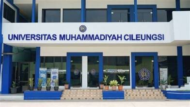

Universitas Muhammadiyah Cileungsi
Universitas Muhammadiyah Cileungsi merupakan perguruan tinggi tempat mahasiswa mengembangkan pengetahuan, keterampilan, dan pengalaman akademik.
Alamat: Universitas Muhammadiyah Cileungsi, Jl. Anggrek No.25, Perum. PTSC, Cileungsi, Kec. Cileungsi, Kabupaten Bogor, Jawa Barat 16820.
Fakultas dan Program Studi
- Fakultas Teknologi dan Sains
- Program Studi Rekayasa Perangkat Lunak
Alamat kampus: Universitas Muhammadiyah Cileungsi, Jl. Anggrek No.25, Perum. PTSC, Cileungsi, Kec. Cileungsi, Kabupaten Bogor, Jawa Barat 16820.